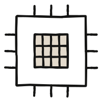
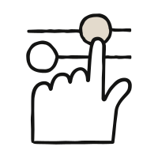

학습 목표
예상 소요 시간: 20분
이 수업을 마치면 다음을 할 수 있습니다:
- 생성형 AI와 일상에서 이미 접하고 있는 분류·예측 AI를 구별할 수 있습니다
- 생성형 AI의 특성이 능력과 한계 사이의 연속선상에 존재한다는 것을 이해합니다
- 심층적으로 탐구할 네 가지 핵심 속성을 미리 살펴봅니다: 다음 토큰 예측(Next Token Prediction), 지식(Knowledge), 작업 메모리(Working Memory), 조종 가능성(Steerability)
AI에 대한 사고 모델 구축
AI가 할 수 있는 것과 할 수 없는 것을 결정하는 네 가지 속성. 각각은 스펙트럼 위에 있으며 — 오른쪽으로 갈수록 더 많이 검증하고 보완해야 합니다.
AI의 답변은 어디서 오는가?
AI는 실제로 무엇을 알고 있는가?

AI는 지금 무엇에 주의를 기울이고 있는가?

내가 얼마나 통제하고 있는가?
"AI"는 광범위한 용어입니다. 다음에 볼 영상을 선택하는 추천 엔진, 받은 편지함의 스팸 필터, 의심스러운 거래를 표시하는 사기 탐지 모델 — 이 모두가 AI이지만, 생성형 AI는 아닙니다. 이러한 시스템들은 정렬하고, 순위를 매기고, 분류하고, 예측합니다. 매우 유용하며 우리의 일상 속에서 끊임없이 작동하고 있지만, 이 강좌가 다루는 내용은 아닙니다. 최근 변화한 것은 생성형 AI의 부상입니다: 기존 콘텐츠를 분류하는 것이 아니라 텍스트, 이미지, 코드, 오디오 등 새로운 콘텐츠를 만들어내는 시스템입니다. 생성형 AI는 두 단계로 구축됩니다: 방대한 데이터에서 패턴을 학습하는 사전 훈련(pretraining)과, 안전하고 윤리적이며 유익하도록 형성하는 미세 조정(fine-tuning)입니다.
본질적으로, 생성형 AI는 예측 시스템입니다 — 일관되게 능숙하거나 일관되게 불안정한 것이 아니라, 특정하고 예측 가능한 축을 따라 강점과 약점이 나뉩니다. 대부분의 경우, 강점과 약점은 동일한 메커니즘에서 비롯됩니다: AI가 설득력 있는 글을 쓰는 것도 예측 엔진이기 때문이고, 환각(hallucination)을 일으키는 것도 같은 이유에서입니다. 이 강좌는 다음 네 가지 속성을 다룹니다:
- 다음 토큰 예측(Next Token Prediction) — 답변은 어디서 오는가? 모델은 무언가를 찾아보는 것이 아니라, 한 번에 하나의 조각씩 다음에 올 내용을 쓰는 것입니다.
- 지식(Knowledge) — 실제로 무엇을 알고 있는가? 폭넓지만 고르지 않으며, 학습 데이터 기준 시점에 고정되어 있습니다.
- 작업 메모리(Working Memory) — 지금 무엇에 주의를 기울이고 있는가? 컨텍스트 창에 있는 것만이 활용 가능합니다.
- 조종 가능성(Steerability) — 당신은 얼마나 통제하고 있는가? 놀랍도록 방향을 잡기 쉽지만, 의도한 것과 실제 결과 사이에 간극이 생길 수 있습니다.
목표는 교정된 신뢰입니다: 각 연속선상에서 자신의 작업이 어디에 위치하는지, 익숙한 영역에 있는지 아니면 경계에 가까운지, 그리고 틀렸을 때의 위험이 무엇인지 묻는 법을 배우는 것입니다.
핵심 요점
- 생성형 AI는 새로운 콘텐츠를 생성합니다 — 기존 콘텐츠를 분류하는 것이 아닙니다.
- AI는 일관되게 능숙하거나 일관되게 불안정하지 않습니다. 다음 토큰 예측, 지식, 작업 메모리, 조종 가능성이라는 네 가지 예측 가능한 축을 따라 강점과 약점이 있습니다.
- 각 속성은 연속선입니다. 동일한 메커니즘이 능력과 한계를 동시에 만들어냅니다.
- 교정된 신뢰 란 신뢰를 일괄적으로 부여하거나 거두는 것이 아니라, 연속선상에서 자신의 작업 위치를 파악하는 것을 의미합니다.
연습 문제
연습: 생성형인가, 아닌가?
왜? 방금 생성형 AI가 스팸을 필터링하고 다음 영상을 추천하는 AI와 근본적으로 다르다는 것을 배웠습니다. 이제 그 구분을 자신의 경험에 적용해 보겠습니다.
- 이번 주에 사용한 AI 기반 기능 다섯 가지를 나열하세요. 넓게 생각해 보세요: 자동 완성, 사진 태그, 스팸 필터링, 챗봇 답변, 번역, 상품 추천, 음성 어시스턴트.
- 각각에 대해 판단을 메모하세요: 새로운 콘텐츠를 생성하는가, 아니면 기존 콘텐츠를 정렬·순위 매기기·분류하는가?
- 목록을 AI와 공유하고 판단을 확인해 달라고 요청하세요. 틀린 것(또는 확신이 없었던 것)에 대해서는 한 문장으로 그 구분을 설명해 달라고 하세요. 그런 다음 질문하세요: "이 다섯 가지 중 이 강좌가 이해하는 데 도움이 될 실패 패턴이 가장 많은 것은 무엇인가요?"
-
수업 1의 작업 목록으로 돌아가세요.
각 작업에 지금 가장 관련 있다고 느껴지는 속성 질문으로 태그를 붙이세요:
- 답변은 어디서 오는가? (다음 토큰 예측)
- 무엇을 알고 있는가? (지식)
- 무엇에 주의를 기울이고 있는가? (작업 메모리)
- 내가 얼마나 통제하고 있는가? (조종 가능성)
이것들을 완벽하게 맞출 필요는 없습니다. 다음 네 수업에서 검증할 예측을 만들고 있는 것입니다.
수업 되돌아보기
- AI의 생성형/분류형 구분이 사용하는 도구에 대한 생각을 바꾸었나요?
- 작업 목록에 붙인 태그를 살펴보세요. 하나 이상의 속성에 해당될 것 같은 작업이 있었나요?
다음 내용
네 가지 속성을 본격적으로 다루기 전에, AI 시스템이 어떻게 특정한 성격을 갖게 되는지에 대해 한 수업을 할애하겠습니다. 왜 정중하고, 도움이 되며, 정직한지, 왜 때로는 너무 쉽게 동의하는지, 왜 특정 사항을 거절하는지. 그 형성 과정은 이후의 모든 것에 흔적을 남깁니다.
피드백
강좌를 진행하면서 강좌의 개념을 업무에 어떻게 활용하고 있는지, 그리고 의견이 있으시면 알려주세요. 피드백은 여기 에서 공유해 주세요.
감사의 말 및 라이선스
Copyright 2026 Anthropic. Rick Dakan 교수(Ringling College of Art and Design)와 Joseph Feller 교수(University College Cork)가 개발한 AI 유창성 프레임워크를 기반으로 한 원작. CC BY-NC-SA 4.0 라이선스 하에 배포됩니다.